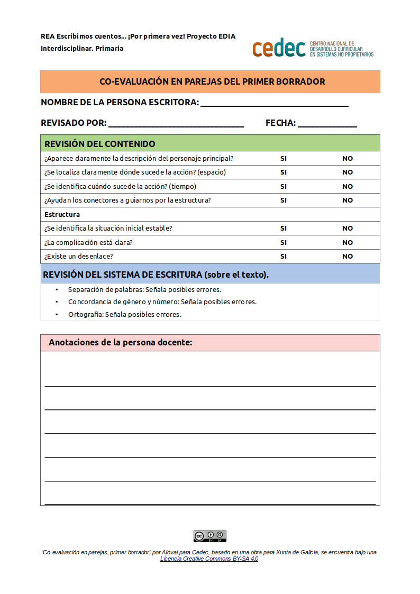

Revisión del borrador de un compañero
Una vez realizada la escritura final y la maquetación del texto colectivo, el alumnado realizará una co-evaluación de los textos de los compañeros.
Confrontar las partes implicadas en el proceso de co-evaluación requiere de la intervención de la persona docente para clarificar y resolver cuestiones referidas a las propiedades del texto y a las propiedades del sistema de escritura. El modelo a entregar al alumnado contiene un espacio para que este haga las anotaciones pertinentes.
Esta cita de Antxon Álvarez Baz y Pilar López García puede servir de reflexión sobre el proceso de corrección:
A continuación presentamos una serie de propuestas para corregir productos textuales. Dichas propuestas fueron experimentadas en el aula o son producto de nuestra experiencia docente. La aplicación combinada de estas técnicas nos llevó a obtener óptimos resultados en el aula.
- Corregir mientras están escribiendo: Mientras el alumnado está escribiendo en clase el docente irá prestándoles la ayuda que necesiten; siempre manteniéndose al margen para que sea el alumnado el protagonista de su propia producción. El docente estará disponible para resolver cualquier duda que tenga el alumnado en el proceso de confección del texto, bien sea haciéndole reflexionar sobre el contenido del texto o sobre la estructura del mismo.
- Corregir una parte y la otra que sea autocorrección. Esta propuesta se lleva a término de la siguiente forma: el docente corrige una parte del producto final; en esta parte señala los diferentes tipos de errores que el alumnado pudiera tener. El docente especifica cada error, lo clasifica y se lo explica al alumnado. A continuación le toca el turno al alumnado; este tiene que autocorregir el resto de la composición procurando no cometer errores similares a los ya corregidos.
Antxon Álvarez Baz e Pilar López García
ACTIVIDAD. Co-evaluación: Revisión del borrador de un compañero
- Duración:
- 60:00
- Agrupamento:
- Parejas
Realizamos un intercambio de textos entre iguales con el fin de proponer mejoras y realizar una crítica constructiva al trabajo de un compañero o compañera. El alumnado incorporará, en la medida de lo posible, las reflexiones sobre estrategias de escritura fruto de la elaboración del texto colectivo.
- Instrucciones
-
Siguiendo las orientaciones de Antxon Álvarez Baz y Pilar López García, la co-evaluación se llevará a la práctica una vez que la composición esté acabada. Es muy habitual que al alumnado se le formulen dudas durante la práctica de este tipo de corrección; sirvan de ejemplo frases como: ¿es correcto lo que escribí o es correcto lo que dice mi compañero? Será tarea del docente resolver todo tipo de dudas y proporcionar al alumnado las explicaciones pertinentes para que todo quede bien claro.
Atendiendo a las normas de la revisión colectiva y al guión que presentamos (simplificado para que se adapte al ciclo inicial y dada su poca práctica realizando este tipo de propuestas), el alumnado deberá revisar el borrador de un compañero:
Guión para la revisión textual
- ¿Aparece claramente la descripción del personaje principal? Si/No
- ¿Está definido el espacio? Si/No
- ¿Está definido el tiempo? Si/No
- ¿Utiliza los conectores semánticos adecuados? Si/No
- Estructura:
- ¿Se identifica la situación inicial estable? Si/No
- ¿Se identifica la complicación? Si/No
- ¿Existe un desenlace claro? Si/No
Identificación de mejoras, haciendo una revisión del sistema de escritura:
- Separación de palabras: señala posibles errores.
- Concordancia de género y número: señala posibles errores.
- Ortografía: señala posibles errores.
- Modelo para la co-evaluación
-
Entregar este modelo al alumnado para la co-evaluación del primer borrador, teniendo en cuenta que es posible su adaptación previa por parte de la persona docente con el software LibreOffice Writer.
- Guía de coevaluación de mi primer borrador (descargar en formato editable odt y en pdf).

Dos minutos para pensar
Empezamos ahora con la quinta entrada de nuestro diario de clase con el título "Revisamos el trabajo de un compañero".
¡Revisar el trabajo de los demás no es una tarea sencilla, aunque lo parezca! Lo realmente difícil es preguntarse si uno mismo también comete esos mismos errores. Antes de continuar podemos contestar juntos a alguna de estas preguntas:
- ¿Has encontrado muchos errores en el cuento que has corregido?
- ¿Qué parte de la tarea te ha resultado más difícil? ¿y más fácil?
- Cita tres cosas que hayas aprendido.
- ¿Te ha gustado esta actividad?
Además de contestar a estas preguntas, podemos anotar en nuestro Diario las dudas que nos surjan o nuestras reflexiones.
Obra publicada con Licencia Creative Commons Reconocimiento Compartir igual 4.0